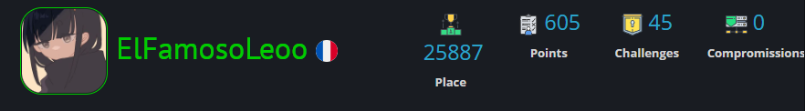
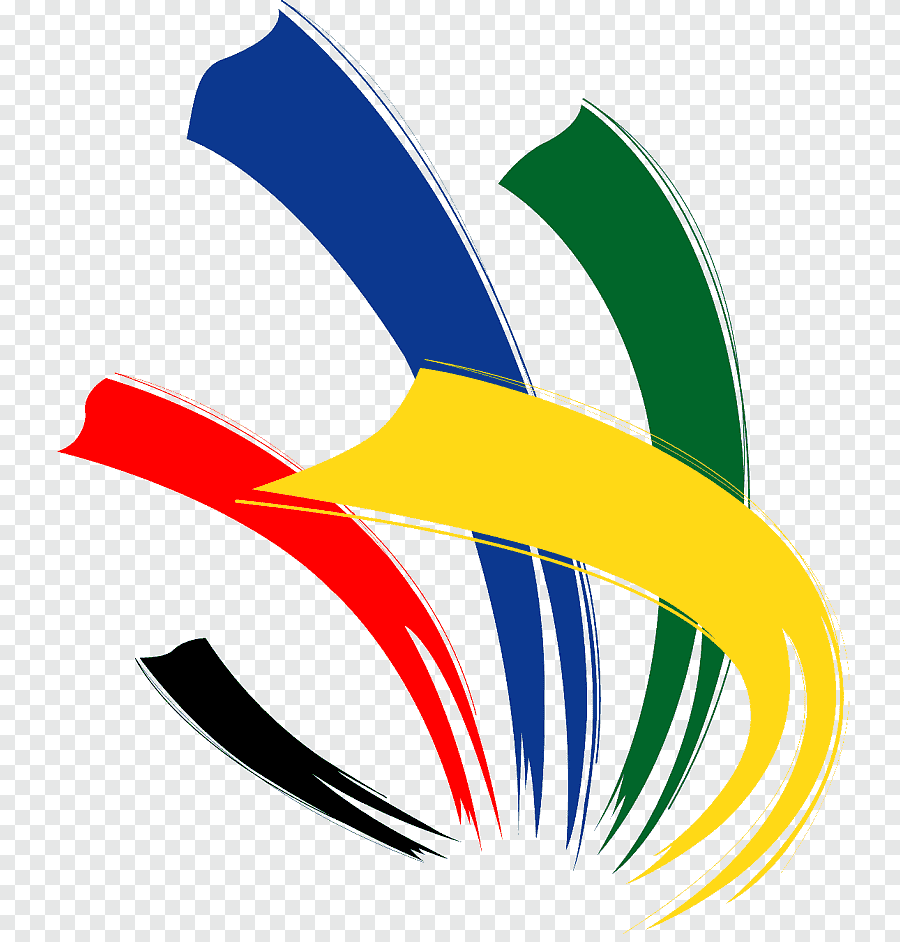

LinkedIn
LinkedIn
 GitHub
GitHub
Parcours Scolaire
- CSB.School
Bachelor Spécialiste CyberSécurité - 2023-2024 - Lycée Edouard Branly
BTS Système numérique informatique et réseau - 2021-2023 - SEPR
Baccalauréat professionnel Système numérique - 2018-2021
Expériences en Entreprise
- Isojet
ADMINISTRATEUR SYSTEME ET SÉCURITÉ
Administration du parc informatique et amélioration du réseau de l’entreprise en incluant des notions de sécurités ainsi que de la résolution de problème de performance
Mars 2024 - juillet 2024 - FFSS
Développeur d'application
Projet réaliser avec un professionnel dans le cadre de mes études, création d’une application en partenariat avec la FFSS pour les aider dans leurs missions de secourisme
Janvier 2023 - Juin 2023 - Safe Women Walk Lyon
Développeur d'application
Création d'une application pour permettre aux femmes de se contacter entre elles pour former des groupes et rentré chez elles en toute sécurités
Mai 2022 – Juin 2022 - Solution Atelier Formation
Développeur et technicien réseau
Développement d'un site internet et mise en service d'une baie serveur pour l'entreprise
Novembre 2020 - Février 2021 - CPAM du RHONE
technicien informatique et réseau
Maintenance du parc informatique de l'entreprise et résolution des problèmes rencontrés par les employés
Mai 2019 - Juillet 2019
Projets de Cybersécurité
- TryHackMe
badge qui montre ce que j'ai pu réaliser sur le site de TryHackMe
- Root Me
Voici un aperçu de mon profil Root Me : ElFamosoLeoo

Compétitions
Compétiteur
-

WorldSkills
5ème place à la compétition régionale WorldSkills dans la catégorie Cybersécurité
Juré
-
WorldSkills
Membre du jury régional dans la catégorie : Solution Logicielle en Entreprise